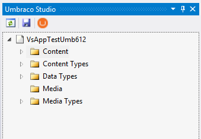
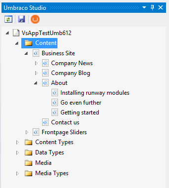
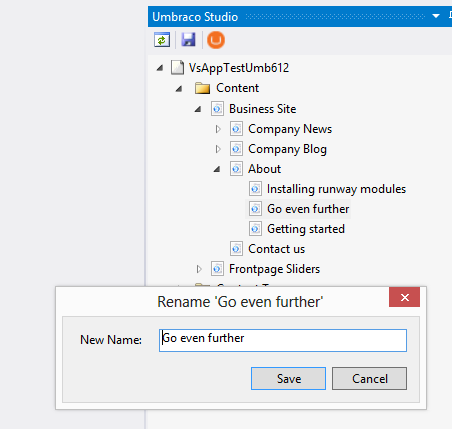
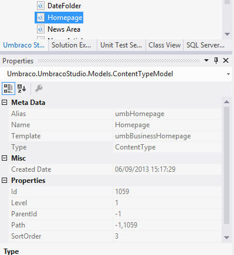

Install-Package UmbracoCms
No dependencies!
*sigh!*
Proper dependencies
Manually merge configs
*sigh!*
Config transforms
Build script included
Proper upgrades!
Trees inside Visual Studio
Expanding, collapsing, navigating
Basic operations - Delete, Trash, Move and Rename
Properties window with meta data
Content, Media,
ContentTypes, Media Types
and DataTypes (Property Editors)
Delete, Trash, Move and Rename
Delete, Create, Serialize/Deserialize Xml
Configure and install database
Create ContentTypes from Visual Studio